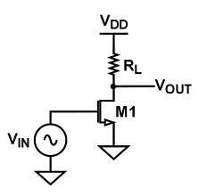
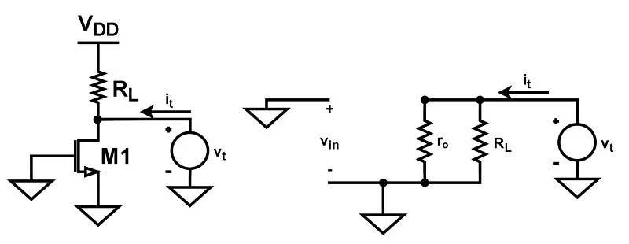
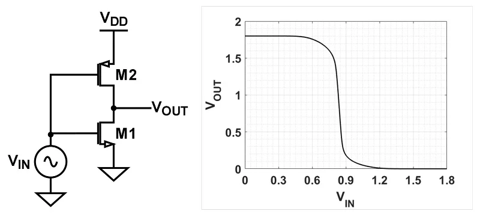
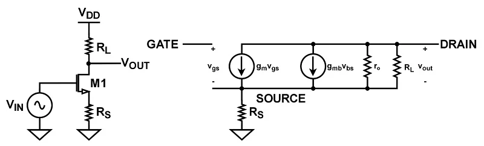

1. Introduction
The MOSFET common-source amplifier is one of the fundamental amplifier configurations used in analog electronics and CMOS integrated circuit design.
In this configuration, the input signal is applied to the gate of the MOSFET, while the output is taken from the drain. The source terminal is common to the input and output circuits.
Key Idea
A small variation in the gate-source voltage produces a variation in drain current. This current variation is converted into an output voltage by the load.
2. Basic Common-Source Amplifier
The simplest MOSFET common-source amplifier consists of an NMOS transistor and a drain resistor connected to the supply voltage.

When the input voltage increases, the gate-source voltage increases. This increases the drain current. Consequently, the voltage drop across the drain resistor increases and the output voltage decreases.
Therefore, the common-source amplifier provides voltage gain with inversion.
Large-Signal Analysis of CS Amplifier
When we gradually increase VIN from zero, the NMOS transistor M1 remains OFF. Therefore, almost no drain current flows and the output voltage stays close to VDD. This continues until VIN approaches the threshold voltage VTH.
As VIN approaches VTH, M1 starts conducting. The drain current ID produces a voltage drop across the load resistor RL. As a result, the output voltage VOUT begins to decrease from VDD.
Once the transistor is ON, it operates in the saturation region as long as the saturation condition is satisfied. For an NMOS transistor, this condition is:
As VIN continues to increase, the drain current also increases. This causes a larger voltage drop across RL, so VOUT continues to fall.
The transistor remains in saturation until the boundary between saturation and the linear (triode) region is reached. At this point:
If VIN is increased further, M1 enters the linear (triode) region. The output voltage then continues to decrease and can approach zero depending on the circuit conditions.
Why Saturation is Important
For a common-source amplifier, the MOSFET is normally biased in the saturation region because this is where the transistor provides useful transconductance for voltage amplification. If the transistor moves into the linear region, the amplifier no longer operates in its intended high-gain condition.
Therefore, the useful output range of the common-source amplifier can be considered mainly within the region where M1 remains saturated. The upper end of this range occurs when the transistor just begins to conduct, while the lower end occurs when the transistor reaches the saturation-to-linear boundary.
The output voltage is given by:
From this expression, we can see that the voltage drop across the load is determined by the product IDRL. Therefore, controlling the bias current and load resistance is important when we want to obtain a larger usable output range.
3. MOSFET Operating Region
For amplification, the NMOS transistor is normally biased in the saturation region.
Cutoff Region
When the gate-source voltage is smaller than the threshold voltage, the transistor is approximately turned OFF.
Saturation Region
The saturation condition for an NMOS transistor is:
In this region, the drain current is strongly controlled by the gate-source voltage, making the transistor useful for voltage amplification.
Triode Region
If the drain-source voltage becomes too small, the transistor enters the triode region. The circuit then no longer behaves as the intended high-gain amplifier.
4. Small-Signal Model
To analyze the amplifier for small input variations, the MOSFET can be replaced by its small-signal model.

Important Parameters
- gm – MOSFET transconductance
- ro – MOSFET small-signal output resistance
- RD – drain resistance
- VGS – gate-source voltage
- VDS – drain-source voltage
5. MOSFET Transconductance
Transconductance represents the change in drain current produced by a small change in gate-source voltage.
For a long-channel MOSFET operating in saturation, transconductance can be approximated as:
where the overdrive voltage is:
6. Voltage Gain
The small-signal voltage gain of a common-source amplifier with a drain resistance can be approximately expressed as:
If the MOSFET output resistance is much larger than the drain resistance, the expression simplifies to:
The negative sign indicates that the output voltage is inverted with respect to the input voltage.
7. Input and Output Resistance
Input Resistance
Ideally, the MOSFET gate draws almost no DC current. Therefore, the input resistance of the transistor is very high.

Output Resistance
The small-signal output resistance is approximately:
8. Different Load Configurations
The load connected to the MOSFET drain has a significant effect on voltage gain and output resistance.
| Load | Characteristics |
|---|---|
| Resistive Load | Simple implementation and easy to analyze. |
| Diode-Connected MOSFET | Compact implementation but relatively low output resistance. |
| Current-Source Load | Higher output resistance and potentially higher voltage gain. |
| Active Load | Widely used in CMOS integrated circuits to obtain high gain without large passive resistors. |
9. Active Load
In integrated CMOS circuits, MOSFETs can be used as active loads instead of large resistors.

The effective output resistance can become large because the output resistance of both transistors contributes to the gain.
10. Source Degeneration
A resistor can be placed between the source terminal and ground. This technique is known as source degeneration.

The source resistor introduces local negative feedback. This reduces the effective variation of VGS and improves the linearity of the amplifier.
Gain vs Linearity
Source degeneration generally improves linearity and stabilizes circuit behavior, but it also reduces the voltage gain.
11. Important Design Trade-offs
- Increasing gm generally increases voltage gain.
- Increasing the load resistance can increase gain, but it can also affect output swing.
- Larger output resistance generally contributes to higher voltage gain.
- Source degeneration can improve linearity while reducing gain.
- Active loads are commonly used in CMOS ICs because they can provide high effective resistance without requiring a large physical resistor.
- Proper biasing is required to keep the MOSFET in the desired operating region.
12. Importance in Analog IC Design
The common-source stage is one of the fundamental building blocks used in analog integrated circuits.
Understanding this stage helps in analyzing more advanced circuits such as differential amplifiers, operational amplifiers, current mirrors, bandgap references and voltage regulators.
Concepts such as transconductance, output resistance, biasing, gain and feedback are all important when designing analog ICs.
13. Summary
Key Takeaways
- The gate is the input terminal and the drain is the output terminal.
- The common-source amplifier provides voltage gain with phase inversion.
- Gain depends strongly on MOSFET transconductance and output resistance.
- Active loads can provide high gain in CMOS integrated circuits.
- Source degeneration improves linearity but reduces gain.
- Proper biasing is essential for amplifier operation.
Reference
Concepts discussed in this article are based on the following technical reference:
All About Circuits – Introduction to the MOSFET Common-Source Amplifier